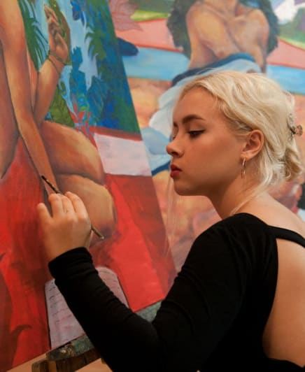

略歴
-
生涯
ソフィヤ・カンダウロヴァは、ウクライナのキエフに生まれ育った。 2022年にロシアによる侵攻が始まった後、彼女は母国からの避難を余儀なくされ、まずポーランドへ、その後ウクライナへ戻り、最終的に日本へと移住した。 ソフィアは2023年にキーウ国立文化大学を卒業した。 2016年から2022年まで、ヴィルガノフスキー・アートスタジオのメンバーとして活動し、6年間にわたり自身の構想と芸術的スタイルを発展させた。 2023年には、「キーウ派絵画」として知られるウクライナの伝統絵画技法のコースを修了した。 その経験を通じて、彼女の作品は現代的なテーマと伝統的な装飾文様の融合を特徴としている。 現在は日本・京都を拠点に制作活動を行っている。

-

アーティスト・ステートメント
私の制作活動における中心的なテーマは、世界の中で自らの居場所を探すことにある。 私は、方向感覚の喪失、未来への不確かさ、そして深い孤独感といった感情を探求している。 これらの感情はしばしば、私の描く人物像に表れる――顔を持たず、断片化され、まるで自身の恐怖や内的葛藤によって引き裂かれているかのようである。 彼らは完全性を欠いているが、それでも混沌の中でつながりと調和を見出そうとする静かな希望に突き動かされ、本能的に互いへと手を伸ばす。 私の作品において同様に重要なのが、人間と自然との関係性である。 テクノロジーやソーシャルメディアに支配された現代において、私たちは現実から徐々に離れ、周囲の環境や自分自身とのつながりを失いつつある。 私は芸術を通して、この失われつつある結びつきを呼び覚ましたいと考えている。 自然は単なる背景としてではなく、生きた存在として現れる――内なる旅における鏡であり、均衡と自己発見へと導く道標として。 私の作品は、他者とのつながり、自然との関係、そして忘れ去られた自己の一部と再び結びつきたいという、深い希求を映し出している。
CV
-
展覧会:
2025年「独立記念日」京都市国際交流会館（日本・京都）
2024年「冬の奇跡」慈善史博物館（ウクライナ・キエフ）
2023年「現代ウクライナ美術」17アートギャラリー（イタリア・ローマ）
2023年「起源から現在へ」タラス・シェフチェンコ国立博物館（ウクライナ・キエフ）
2023年「キエフの伝統におけるトリピリヤ文化の起源」市立図書館（ウクライナ・キエフ）
2023年「Weapon Transformation」D12（ウクライナ・キエフ）
2023年「宇宙の調和」シンギング・フィールド（ウクライナ・キエフ）
2021年「創造性と創世の幸福」アートハブ・モジュリヴィスト（ウクライナ・キエフ） -
個展:
2022年「日常の風景」防空壕（ウクライナ・キエフ）
-
壁画作品:
2023年「クパーラの夜」リハチフの学校（ウクライナ）
（EU Leadプログラムおよび欧州委員会の支援のもと）